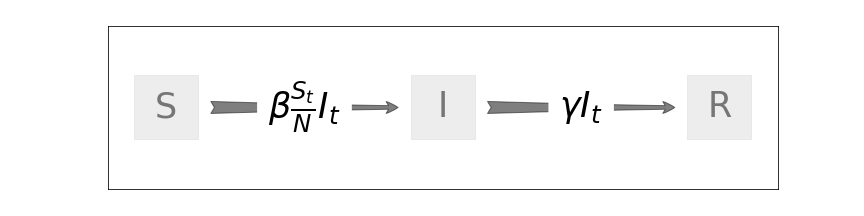
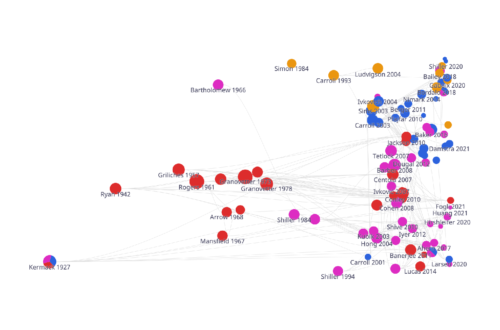
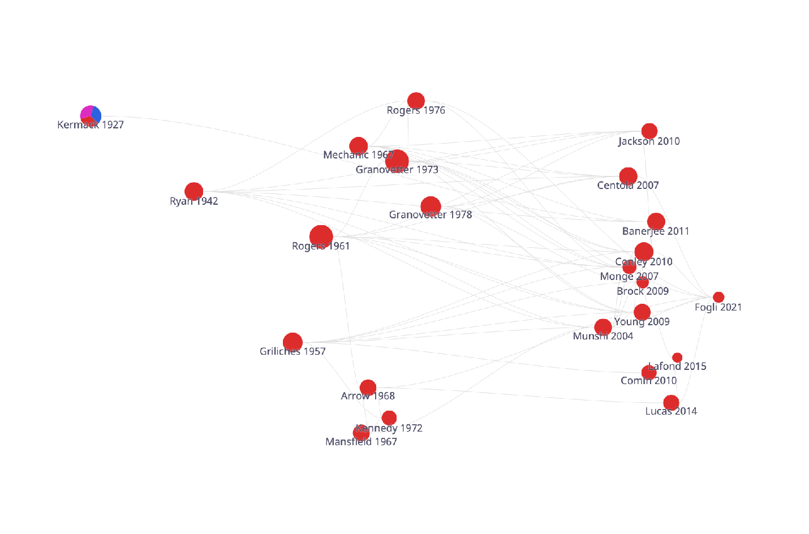
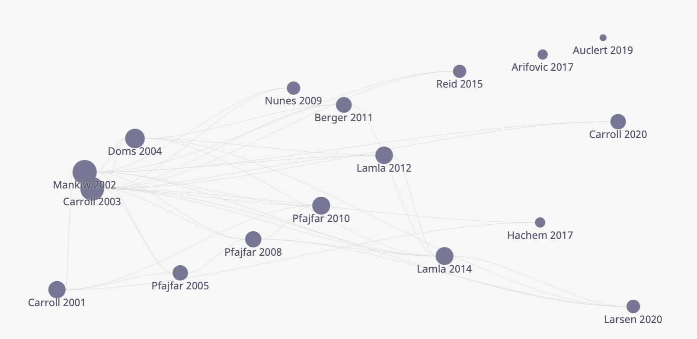
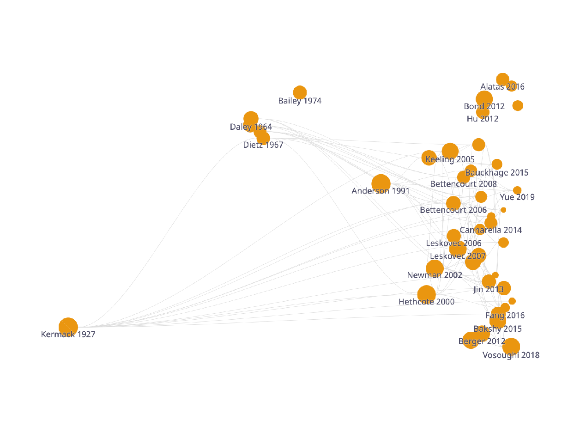
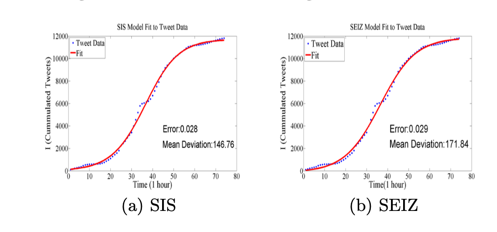

Abstract ‘Epidemiological’ models of belief formation put social interactions at their core; such models are widelyused by scholars who are not economists to study the dynamics of beliefs in populations. We survey theliterature in which economists attempting to model the consequences of beliefs about the future –‘expectations’ – have employed a full-fledged epidemiological approach to explore an economic question. Wedraw connections to related work on ‘contagion,’ narrative economics, news/rumor spreading, and the spreadof internet memes. A main theme of the paper is that a number of independent developments have recentlyconverged to make epidemiological expectations (‘EE’) modeling more feasible and appealing than in the past.
Keywords
Economic Expectations, Epidemiological Expectations, Social
interactions, Social dynamics, Information diffusion, Economic
Narratives
1Contact: ccarroll@jhu.edu, Department of Economics, 590 Wyman Hall, Johns Hopkins University, Baltimore,MD 21218, https://www.econ2.jhu.edu/people/ccarroll, and National Bureau of Economic Research;twang80@jhu.edu, Department of Economics, 590 Wyman Hall, Johns Hopkins University, Baltimore, MD21218
A very natural next step for economics is to maintain expectations in the strategicposition they have come to occupy, but to build an empirically validated theory ofhow attention is in fact directed within a social system, and how expectations are,in fact, formed. – Simon (1984)
If we want to know why an unusually large economic event happened, we needto list the seemingly unrelated narratives that all happened to be going viralat around the same time and affecting the economy in the same direction. –
Shiller (2017)
While mass media play a major role in alerting individuals to the possibility of aninnovation, it seems to be personal contact that is most relevant in leading to itsadoption. Thus, the diffusion of an innovation becomes a process formally akin tothe spread of an infectious disease. – Arrow (1969)
An idea is like a virus. Resilient. Highly contagious. And even the smallest seedof an idea can grow. –Cobb – The movie Inception [2010]
1 Introduction
It is a commonplace, in academia and popular culture, that ideas spread like diseases: they can be
“infectious” or “go viral.” The proposition is hardly new; as Shiller (2017) points out, it can be found
at least as far back as Hume (1748), whose ideas thoroughly infected the work of his friend
Smith (1776).1
Indeed, in fields other than economics, debates about how to model belief dynamics are largely about which
particular models of social communication are most suitable for understanding the spread of which kinds
of ideas.2
“Expectations” are just a category of ideas. So upon being told that expectations play a critical role
in structural economic modeling, a scholar who was not an economist might suppose that
epidemiological approaches would be a standard part of the economist’s toolkit for modeling
expectations — unless there were good reason to believe that economic ideas are immune to
social influence. But evidence for social transmission of economic ideas is plentiful – see
Section 4.4.
Still, it would not be accurate to say that an ‘epidemiological expectations’ (‘EE’) approach is a
standard way of constructing formal models of economic phenomena – a conventional off-the-shelf
alternative, say, to a ‘rational expectations’ (‘RE’) approach, the ‘Rational Inattention’ (‘RI’)
approach advocated by Sims (2003), the ‘diagnostic expectations’ model of Bordalo, Gennaioli,
and Shleifer (2018), or a number of bounded rationality approaches (e.g., Gabaix (2020) or Ilut and
Valchev (2020)).
This is perhaps because nowhere has a focused attempt been made to define what would constitute an EE treatment
of an economic question.3
For the purposes of this survey, we will think of a full-fledged EE treatment as incorporating the
following elements:
a mechanism: An explicit and rigorous mathematical description of a
process by which ideas are communicated between agents ...
implying expectational dynamics: ... that generates observable expectation
dynamics at the level of individuals or populations ...
with economic consequences: ... and those expectations have knock-on
implications for an observable outcome (often, prices, quantities, or market
values) that is the primary subject of the economic analysis.
These criteria whittle down a vast number of invocations, or partial treatments, of the proposition
that ideas spread through social interaction, to the surprisingly small number of papers on which we
primarily focus here. (The last criterion allows us to neglect enormous literatures on public opinion,
politics, musical tastes, internet memes, and other topics).
We have identified three fields in economics – technological diffusion (section 4.1), asset pricing
(section 4.2), and macroeconomics (section 4.3) – with sets of papers that satisfy all these criteria,
even if in some cases the work has not mainly been thought of as ‘epidemiological’ until
now.4 In
addition, we survey the proliferating evidence that social interactions drive expectations and
corresponding behaviors (section 4.4); draw connections between the EE approach and a
separate literature on financial contagion (section 4.5); and present selected examples
of research outside of economics that might be particularly interesting for economists
(section 4.6).5
2 Background and Motivation
2.1 Expectational Heterogeneity
In their introduction to the
Handbook of Microeconomics, Browning, Heckman, and Hansen [1999] wrote that the most
universal lesson of micro economics is that “people are different in ways that importantly affect their
economic behavior.”
Since then, a great deal of the progress in macro economics has come from incorporating
microeconomic heterogeneity “in ways that importantly affect” macroeconomic behavior.
(See “Macroeconomics and Heterogeneity” in the latest Handbook of Macroeconomics,
Krueger, Mitman, and Perri (2016)). In particular, Heterogeneous Agent (‘HA-Macro’)
models that match the distributions of income and wealth have now provided rigorous
microfoundations for Keynesian macroeconomics by capturing measured heterogeneity in (and a
large average value for) the marginal propensity to consume – see Violante (2021)’s Laffont
lecture.
But few models in the HA-Macro literature have allowed for differences in agents’
expectations about variables like stock returns (where everyone’s realized outcome
will be identical) – though disagreements on such subjects are rife and people make
choices that correspond to their expressed beliefs (Giglio, Maggiori, Stroebel, and
Utkus (2021)).6
Partly, the failure to incorporate expectational heterogeneity reflects the fact that until recently
there was not widespread awareness among macroeconomists that measurable expectation
differences have power to explain observable microeconomic behavior. Evidence of the recent change
in attitudes can be seen in the published discussions in the 2017 NBER Macroeconomics Annual
of Manski (2017)’s paper surveying the literature on the measurement of expectations (in which
Manski himself has been the leading figure, and until recently something of a lone voice crying in the
wilderness). The commissioning of this Handbook, and the proliferation of new research
summarized herein, are among the many other indications of a sea-change in the profession’s
attitudes.
The proliferation of new data on expectations, and new evidence that they explain differences in
behavior, seem likely to tempt economists to produce models to fit the facts. Our guess is
that epidemiological models may be one of the primary methods of accomplishing this
goal.
2.2 Epistemology and Epidemiology
Below we briefly summarize the extensive literature outside of economics measuring the spread of
ideas. One element is missing from almost all of this work: a rigorous description of a mechanism
that accounts for an endogenous origin of the ideas.
Economists and philosophers seem to be unusual in wanting a rigorous epistemology: An
account of the origin of the ideas and why they are ‘justified.’ The Rational Expectations
approach resolves this problem by making some rather bold assumptions (there is only one
‘true’ model of the world; everyone fully understands and completely believes the same
true model; everyone observes an identical set of facts and uses deductive reasoning to
draw the same conclusions from them; everyone knows that everyone deduces ... ; and so
on).
An appealing way to connect these approaches is for epidemiological models in economics to be
built to be ‘tunable’ in the degree to which they differ from more familiar models (like
‘rational expectations’). This should not be hard: If the only ‘source’ of ideas is an agent who
believes in the rational expectations solution, and the infection rate is 100 percent, the
solution will be the rational expectations solution. It will then be possible to pin down,
step by step, the reasons for any deviation between the EE and the corresponding RE
model.
In fact, most of the examples of EE models we articulate below are of this kind: There is some
parameter or set of parameters which can be set to zero (or some other specific value), causing the
model to collapse to a RE model.
2.3 Epidemiological Models
We will use the word ‘classical’ to refer to epidemiological models that descend from Kermack,
McKendrick, and Walker (1927), who formulated the problem as one of tracking the size of
‘compartments’ of the population in different disease states (‘Susceptible’ to infection, ‘Infected,’ or
‘Recovered’; S, I, and R for short) under a ‘random mixing’ assumption in which all
members of the population were equally likely to encounter each other in a time interval.
These assumptions allowed formulation of the problem as a set of nonlinear differential
equations.
A newer literature uses the tools of ‘network theory’ to study models in which the ‘nodes’ in a
graph are people and the ‘edges’ are social links between nodes. Erdos, Rényi, et al. (1960)
originated this literature with a model in which connections among agents were a ‘random graph’
(the network analog of the ‘random mixing’ assumption), so the only parameter was ‘degree’: the
number of connections each agent had. Subsequent work relaxed the random graph assumption,
allowing meaningful definition of an agent’s ‘neighbors,’ and showed that a ‘clustering
coefficient’ is a useful measurement of the extent to which a person’s neighbors know each
other.7
While the classical and the network-theory approaches seem quite different, it turns out that a
‘random graph’ network can be configured to produce an arbitrarily close approximation to the
classical problem, by assuming that at any date each node is in one of the three states ,
and that ‘edges’ are the links by which an infection can pass from an infected to a susceptible person
(our SIR model in Section 3.2 is constructed in exactly this way; see Newman (2002) and
Jackson (2010) for canonical analyses of epidemics on networks, and Easley and Kleinberg (2010)
for a textbook focused on markets).
Networks can also be used to study a great many other essentially epidemiological questions that
could not even be formulated in the classical setup.
One particularly interesting result is the “Small World” effect explained by Watts and
Strogatz (1998), who show that even when a network’s ‘clustering coefficient’ is high, a small
sprinkling of random links to ‘distant’ nodes has remarkable power to make a network ‘completely
connected’ (or nearly so). Barabási et al. (2016)’s summary is that when network models are
calibrated to match facts about human connections, the “interconnectedness” phenomenon is
extremely robust.
This provides a satisfying explanation for a phenomenon first documented by Milgram (1967),
who famously found that, on average, any two randomly selected people in the U.S. were able to
identify intermediate links of personal friends and friends-of-friends (and so on) by which they were
connected, with the typical length of the chain involving only six people - they have ‘six degrees of
separation’.8
Moore and Newman (2000) demonstrate that the patterns of the spread of diseases on ‘small
worlds’ networks can be quite similar to those of the classical SIR model - under certain assumptions
about the nature of the interactions that occur over the links. But a subsequent literature has shown
that, even in a network whose link structure satisfies the ‘small worlds’ requirements, the
ultimate outcome depends sensitively not only on the structure of the network but also on the
exact nature of the interactions. Even in a fully connected world, it is easy to construct
models in which disagreement persists indefinitely (Acemoğlu, Como, Fagnani, and
Ozdaglar (2013)) and subpopulations converge to different beliefs (Sikder, Smith, Vivo, and
Livan (2020)).
2.4 Expectational Tribes
If there were no evidence that differences of opinion could matter for important economic
decisions, the case for epidemiological modeling would be weaker. We therefore conclude this our
‘background and motivation’ with some evidence of a recent clear failure of ‘identical beliefs’ with
consequences for measured choices in an area core to both micro and macro modeling: financial
risk-taking.
Meeuwis, Parker, Schoar, and Simester (2021) , using data on millions of retirement investors,
show that after Donald Trump’s surprise victory in the U.S. 2016 Presidential election, investors
likely to be affiliated with Republican Party (inferred from campaign donations at the zip code level)
increased the equity share in their portfolio, while (likely) Democrats rebalanced into safe
assets. (See Figure 1.) These choices occurred at exactly the same time that consumer
sentiment surveys showed that self-identified Republicans had suddenly become more
optimistic, and Democrats more pessimistic, about the economy’s prospects over the next few
years.910
Figure 1: Portfolio Responses to the 2016 U.S. Election
Note: Reproduced from Meeuwis, Parker, Schoar, and Simester (2021), this figure reports regressioncoefficients of equity share on zip-code-level campaign contribution share to Republican candidates over aninterval spanning the election.
3 What insights can the epidemiological framework offer?
3.1 What Is an Epidemiological Framework?
We will say that ideas, beliefs, ‘narratives,’ or other mental states that affect behavior (henceforth,
‘expectations’) result from an “epidemiological” process whenever they are modeled as resulting
from some social interaction.
This is a slightly narrower scope than encompassed in textbook definitions of epidemiology, which
include diseases that develop without any identifiable external influence. The epidemiological models
we are interested in are those for “transmissible” diseases.
But transmission need not be person-to-person; it can reflect exposure to a “common source.”
(Cosmic radiation to which everyone is exposed can cause diseases like cancer). In the context of
beliefs, a natural interpretation of such a “common source” is news media (a point to which we return
below).
In the simplest epidemiological model, a continuous population is partitioned among infected
people I and those who are susceptible S but not yet infected, and the infectiousness of the ‘common
source’ is time-independent at probability . For a population at discrete date zero with a
susceptible population of size 1, the dynamics of such a common-source SI model are given by
Table 1, with the obvious implication that as approaches infinity the entire population eventually
becomes infected.
Table 1: Common Source SI Model
This framework can be extended in many directions. The usual next step is for the disease to be
transmitted as a result of ‘random mixing’ where each susceptible person who encounters an infected
person becomes infected with a fixed probability. Given a non-zero initial infected fraction , the
fraction infected and susceptible evolve per Table 2.
Table 2: Transmissible SI Model
The best-known epidemiological framework adds an ‘R’ state that can designate
either recovery or ‘removal’ (via, say, death), yielding the ‘classical’ SIR
models.11
The SIR framework has rich and interesting implications, such as the potential for ‘herd immunity’
which comes about when a high enough proportion of the population has either Recovered or
otherwise been Removed (say, by vaccination) from the Susceptible compartment.
Options proliferate from there.12
A framework in which there are two possible outcomes of the infection, recovery or death, receives
the acronym SIRD. If the disease is one in which it is necessary to track the proportion who have
been Exposed but are not yet (and may never become) infected, the result is an SEIR model – and so
on.
One standard assumption for all of these models is that agents are ex-ante homogeneous, but the
classical framework can be extended to permit various kinds of heterogeneity – at the considerable
cost of adding whole new systems of nonlinear differential equations. An advantage of the network
approach is that since it is solved by simulation, modifications of the model are much easier to
make because they do not add new systems of simultaneous differential equations to be
solved.
3.1.1 Adapting the Disease Metaphor to Expectations
Basic epidemiological models usually study the dynamics of a single disease in a population, with
a natural terminal stage like recovery or death. Economists will often be interested in keeping track of
how expectations change about an aggregate variable like stock prices, which does not have a
terminal point and in which many competing opinions may infect different people at the same
time.
An advantage of network-theory tools is that they can easily accommodate ways in which an
economic application may call for such modifications. It is trivial to represent as many competing
‘diseases’ (e.g., theories of stock prices) as desired, and there is no need to specify a ‘recovery’
state.
To take a more complex example, in classical epidemiological models it would be
painful to capture dynamics of a disease in which people become ‘more infected’ after
repeated contact with other infected people. But in a network model, it is easy to
capture the proposition that a person may need to be exposed to an idea more than
a certain number of times, or from more than a given number of sources, before they
will adopt it – as proposed in Granovetter (1978), and as implemented in Jackson and
Yariv (2007).13
3.2 One Example
Here, we provide a specific example of an economic question formulated in a thoroughgoing
epidemiological way. Our present purpose is not to extract economic insights – we do that in
section 4.2 below – but simply to illustrate how the epidemiological toolkit works.
Shiller and Pound (1989) use an SIR model to capture how interest in particular stocks
spreads;14 we
examine a model almost identical to theirs. At date , a large population of investors measured by
the real number is divided into three “compartments.” (See Figure 2). investors are currently
“infected” with interest in a certain stock; investors are not infected but are “susceptible” to becoming
interested; and measures investors who have been “infected” but have “recovered” from the
infection.15
Figure 2: A SIR model of stock investors

Note: This graph plots the transitions between different compartments in the SIR model of stock investorsdescribed in Shiller and Pound (1989).
Under ‘random mixing,’ each person is expected to have contact with others, randomly selected
from the entire population. The only kind of contact with any consequence is between an infected
and a susceptible person: Such an encounter has a probability of causing the susceptible person to
become infected.
Epidemiological models typically define a parameter that combines consequences
of the rate of social contact and the rate of transmission upon contact,
:16
(1)
The expected number of new infections generated in period (corresponding to the decline in the
number of susceptible persons) can now be calculated: Fraction of an infected person’s
contacts will be susceptible, so the number of newly generated infections per infected person will be
The ‘infected’ population also changes because every infected person recovers with
a probability of per period.
Putting these elements together, the changes in the population in different compartments are given
by
(2)
Figure 3: Simulated dynamics from a SIR model of stock investors
The four figures respectively simulate an SIR model under calibrations corresponding to Shiller andPound (1989)’s parameter estimates for (1) institutional investors for a randomly selected stock (INSRAND);(2) institutional investors for a rapidly rising stock (INSRPI); (3) individual investors for a random stock(INDRAND); and (4) individual investors for a rapidly rising stock (INDRPI). The susceptible population S isdashed; dash-dot shows the size of the I compartment, and the recovered population R is solid. The horizontalthin solid line corresponds to the limiting size of compartment ofin the long run. To reproduce these figures,see the companion Jupyter Notebook.
The simplest special case of the SIR model is one with a recovery rate of , in which case the
model reduces to the transmissible SI model discussed in Section 3.1. Another straightforward case is
, in which from any starting point the population of infected persons gradually dies down to
zero.
The interesting cases emerge when the ‘basic reproduction ratio’ exceeds one (this
is unrelated to the used elsewhere to measure the recovered population), because
guarantees that an initial arbitrarily small infection will grow, at least for a while (assuming that at
the beginning everyone is susceptible, ).
To illustrate the model’s implications, we configure it with four combinations of parameter values
taken from Shiller and Pound (1989), characterizing two different kinds of investors and two
categories of stocks.
We calculate the quantitative implications using one of the best of the many computational toolkits
for analyzing such models that have proliferated in recent years: NDlib lets users specify an arbitrary
network structure on which a disease might spread. We exploit the above-mentioned fact that a
random-mixing SIR model can be approximated with an ex-ante generated random graph when the
transmission probability and the average number of connections in the graph are
configured such that their product is equal to the calibrated infection rate (see Equation
1).17
In Figure 3 the vertical axis measures the populations of S, I, and R investors;
time since the initial date of infection is on the horizontal axis. Also plotted is
the limiting size of the recovered compartment, for which an analytical solution
exists.18
Two common patterns emerge. First, since in all four cases the basic reproduction ratio is
greater than 1, in all four cases there is an outbreak. The size of the infected population first expands
to its maximum value and then gradually levels off to zero, exhibiting a hump-shaped “viral curve”
characteristic of SIR models. Second, in all scenarios, the system ultimately converges to a
steady-state where most people have cycled through infection and recovery. Even in the case with the
smallest reproduction ratio, the proportion who cycle through the process of Infection and
Recovery is almost 85 percent, implying a high degree of infectiousness. Under other
configurations, the limiting size of the infected-then-recovered ‘compartment’ is close to 100
percent.
The main difference in the parameterizations is the speed with which these eventualities play
themselves out, which varies considerably. (For a discussion of the model’s economic (as distinct
from epidemiological) content see Section 4.2).
4 Literature
Figure 4: Literature map of cited papers

Note: Papers we have identified as having a strong epidemiological flavor in three literatures in economics:technological diffusion (red), asset markets (purple), and macroeconomic expectations (blue). Papers in yellowhave no epidemiological content but are cited in the text as having content that may be interesting to EEmodelers. See herefor an interactive version.
Figure 4 provides a citation map of papers in the literatures we discuss here; the thin lines
represent a citation from the later paper to the linked earlier one.
4.1 Diffusion of Technology
Figure 5: Literature map of EE models of technological diffusion

Note: This graph includes selected papers under the topic of epidemiological modeling oftechnological/innovation diffusion in economics and closely related literature from other fields. See herefor aninteractive version.
Arrow (1969) argues that the process of knowledge diffusion may account for international
differences in both levels and dynamics of income per capita. He conjectures that knowledge
diffusion is influenced by factors that he explicitly compares to those that influence the spread of
disease including (1) the perceived reliability of the sender (which affects infectiousness); (2)
socioeconomic traits (which affect exposure and susceptibility); (3) the understandability of
information by the receiver (degree of immunity); and so on.
Arrow’s interpretation puts technological diffusion squarely in the realm of EE modeling, under
the mild further assumption that what spreads is the ‘expectation’ that adoption of the technology
will yield higher productivity (See Banerjee, Chandrasekhar, Duflo, and Jackson (2013), discussed
below, for survey evidence confirming that people adopt a technology when they expect it to be
beneficial).
In closely related work, Rogers et al. (1962) popularized a theory of the “diffusion
of innovations” based on a meta-analysis of studies of the spread of ideas in academic
disciplines.19
The factors that this literature identifies as determinants of the dynamics of diffusion are directly
interpretable as corresponding to the “infectiousness” of the idea, the degree to which
populations are “exposed” to the idea, and many of the other elements of epidemiological
models.
Young (2009) presents a broad survey of how alternative epidemiological models generate
different shapes of “adoption curves” with consequent effects on the path of economic
growth. He shows how the shape of diffusion curves differs in models of ‘inertia’
(a SI common-source model), ‘social influence’ (a threshold model), ‘contagion’ (a
transmissible SI model), and ‘social learning,’ where learning is based on observed actions of
others.20
The aforementioned Banerjee, Chandrasekhar, Duflo, and Jackson (2013) estimates an
epidemiological model based on the real-world network and pattern of diffusion of microfinance in
Indian villages, providing direct evidence for word-of-mouth diffusion of beliefs through a social
network.
Lucas and Moll (2014) construct an economy containing agents with a distribution of levels of
productivity, and consider the dynamics of aggregate productivity under several alternative
assumptions about how agents with lower productivity ‘learn’ from agents with higher productivity.
Agents solve an optimization problem to determine the intensity of their search effort, which affects
the likelihood of encountering an agent with a learnable “better technology.” This is likely to be a
common direction in which economists may take epidemiological models: Incorporation of
purposive behaviors by agents. While some work in epidemiology allows agents to take actions to
reduce the probability of infection, models in that literature have rarely been formulated with an eye
to creating a structure where an explicit analytical optimization problem can be stated and
solved.
Not only are mechanisms of the spread of technology and disease comparable, they may interact.
Fogli and Veldkamp (2021) develop a model in which the structure of the networks connecting
people (‘nodes’) allows the authors to explore the roles of the three dimensions central to the network
theory literature that has developed since Erdos, Rényi, et al. (1960): ‘degree,’ ‘clustering,’ and
‘sprinkling’ (see section 2.3). Both productivity and disease spread through these connections, so the
dynamics of productivity and disease are connected. The model highlights a trade-off between the
speed of technological diffusion and disease spreading, which affect economic growth outcomes in
opposite directions.
4.2 Financial Markets
Figure 6: Literature map of EE models of stock/housing market investment
Note: This graph includes selected papers related to epidemiological models of expectations in asset markets,and studies of the role of news media in financial markets. See herefor an interactive version.
Academic models of financial markets traditionally assume investors choose stocks based on
self-generated rational beliefs about future returns. But popular treatments have emphasized
social communication, and ideas with a distinctly epidemiological flavor, since the first
published description of the first publicly traded securities (De La Vega (1688)’s account
of the trading of shares of the East India company on the Amsterdam stock exchange).
MacKay (1850)’s vivid prose has made his (thoroughly epidemiological) descriptions of the
Dutch Tulip mania and other financial episodes of “The Madness of Crowds” a classic of
English literature. This popular emphasis on the importance of social interactions has
continued to the present: Michael Lewis (2011)’s bestseller about the financial crisis of
2008-09 goes so far as to suggest that one of the reasons a particular analyst was able to
perceive the housing bubble early was his temperamental indifference to other people’s
opinions.
The academic tide seems now to be turning in this popular direction. Hirshleifer (2020)’s
Presidential Address to the American Finance Association urged the profession take up
the study of the social transmission of ideas as “[a] key but underexploited intellectual
building block of social economics and finance,” and argues that such models may be
able to make sense of patterns that are difficult to understand with traditional models.
Akcay and Hirshleifer (2021) make a broad argument that there are important biases in the
transmission of ideas from one person to another which ‘shape market outcomes.’ Kuchler and
Stroebel (2021) propose ‘social finance’ as the name for a field that would study the role of
social interactions, and argue that new data and new methods could advance the field
quickly.
These are by no means the first academics to propose a role for social transmission of financial
ideas. But the proportion of efforts that could be described as constituting a full-fledged
EE analysis, as opposed to piecemeal evidence or provocative theoretical exercises, is
small.
An early example of such a comprehensive approach is Shiller and Pound (1989),
used in Section 3.2 to delineate the elements of the generic SIR model. Now we interpret
its content as an economic model. Shiller and Pound (1989) surveyed individual active
investors to understand the sources of information that generated their initial interest in the
stock they had most recently purchased (which they designate as ‘randomly selected’
– RAND), and in a set of stocks that have been “rapidly rising.” (‘RPI’). Their separate
survey of institutional investors used a different methodology to designate RAND and RPI
stocks.
Their survey-based estimates of the epidemiological parameters for both individual (‘IND’) and
institutional (‘INS’) investors indicate considerable heterogeneity in infection rates both within and
between the groups. The estimates also suggest that infectiousness differs between RAND and a RPI
stocks. Interestingly, the RAND category is more (interpersonally) “infectious” than the rapidly rising
category; the authors speculate that public news sources will already have widely covered
rapidly rising stocks, so that interpersonal communications are unnecessary to attract
attention.
Figure 3 shows compartmental dynamics under their median estimates (of infection and removal
rates) for individual and for institutional investors, and for randomly selected versus rising stocks,
respectively.
The epidemiological parameters are estimated from a sample of highly interested and motivated
investors – which is why it is not surprising that all parameterizations were ones in which (the
proportion of investors who would eventually become interested in a stock) converges to a high
value.
The results can now also be interpreted in temporal terms. The authors note that a fully rational
model with no private information would imply that spikes in trading volume should immediately
follow news events, while the epidemiological model is consistent with long and variable lags. It
takes around half a year for the interest of institutional investors in the randomly selected stocks to
reach its peak and a little more than a year for a rapidly rising stock. For individual investors, the
population interested in RAND reaches its peak after 40 weeks, while interest in RPI takes 2.5 years to
peak.
The paper also argues that in a special case where the infection rate is close to the removal rate,
and the size of the pool of interested investors is driven by serially uncorrelated shocks, stock prices
could follow a random walk, because the change in the level of ‘interest’ would be nearly
unforecastable.21
Remarkably little of the large literature citing Shiller and Pound (1989) has involved meaningful
epidemiological modeling; most has either been nonstructurally empirical, or has used a
modeling framework that cannot really be characterized as ‘epidemiological.’ A likely
reason for this lack of followup is the nonexistence of direct data on either of the two key
components of the model: beliefs (about, say, stock prices); and social connections. Shiller and
Pound (1989) had to make heroic assumptions to quantify their model. Few subsequent
scholars have been willing to go so far in employing what might today be termed an ‘indirect
inference’ approach: “Assuming the epidemiological model is right, let’s calibrate it using its
downstream implications for things we can observe.” We have found only two subsequent papers
that estimate parameters of a structural epidemiological model of stock investors using
microdata.
Shive (2010) uses an SI (‘susceptible-infected’) model to figure out how to construct a
reduced-form empirical regressor that aims to capture social influences among investors ( in
our equation (2)). Using nearly the universe of ownership data for Finnish stocks between 1994 and
2004, the author assumes that the key social infection channels are at the municipal level,
and estimates the time-series dynamics of ownership within municipalities. Controlling
for standard variables (demographics, news sources, price dynamics, and others), the
author estimates the coefficient in Equation (2). The estimated is highly statistically
significant, indicating at a minimum that there is some local dynamic pattern to stock
purchases which is captured by ‘proportion locally infected last period’ ( in our
equation (2)).
The second example is Huang, Hwang, and Lou (2021), which estimates an epidemiological
model of diffusion of financial news among geographical neighbors. The paper reports a
time-average estimate of the reproduction ratio between to (equivalent to in
the SIR model above). Since the estimated reproduction ratio is below 1, their results imply that news
of this kind does not lead to an epidemic of stock trading. This is in contrast with Shiller and
Pound (1989), whose corresponding reproduction ratios far exceeded one. This difference
highlights the extent to which epidemiological models must be interpreted with care; even if
similar phenomena (stock trading) are being studied, and even if there is evidence of social
communication, the estimated nature and size of the epidemiological consequences can vary greatly
depending on the exact experiment. The authors also find stronger transmission between
investors of the same characteristics (age, income category, and gender), confirming the usual
presumption of homophily (people trust others with similar backgrounds); and between senders
and receivers with high past performance, the natural interpretation of which the kind of
‘transmission bias’ discussed by Han, Hirshleifer, and Walden (2022), in which people
are more likely to boast about their investments in winners than to mention their losing
bets.
A final example of an EE model in asset markets is an impressive model of housing price
fluctuations by Burnside, Eichenbaum, and Rebelo (2016), which shows how incorporating social
interactions can generate booms and busts. A foundational assumption is that agents differ in their
beliefs (optimistic or skeptical) about the fundamental value of housing (and the model collapses to a
Rational Expectations equilibrium under some simple alternative assumptions). Although it is a
random-mixing model, the paper has a mechanism with implications similar to those of the simplest
epidemiological model of ‘super-spreaders’ (in which some agents have many more social
connections than others): Their agents differ in the degree of confidence they have in their
opinions (whether optimistic or pessimistic) and those with greater confidence are more
likely to convert those who have less confidence. Because it is calibrated using survey
data on house price expectations, the model satisfies all our criteria for a full-fledged
EE model.Their most interesting result is that whether a housing boom is followed by a
bust can depend on which opinion (optimistic or skeptical) turns out to be closer to the
true fundamental value: Busts happen when the skeptics turn out to be right about the
fundamentals, while booms caused by optimists who happen to be right are not followed by
busts.
Another two strands of literature that deserves brief mention are the “evolutionary approach” of
the financial markets (Lo (2004); Brennan and Lo (2011)) and the work on “Agent Based
Computational Finance” (see the survey of that title by LeBaron (2006)). It would be
straightforward to reinterpret much of this work as exploring epidemiological models of
expectations of asset prices, and epidemiological terminology is sometimes explicitly
invoked in the literature. For instance, Hirshleifer, Lo, and Zhang (2021) constructs a
model of social contagion of diverse “investment styles” and those which yield higher
returns are more likely to transmit and show heterogeneous investment styles coexist in
equilibrium. Economists interested in constructing formal EE models would do well to delve into
that literature for ideas that could be reinterpreted (or relabeled) to purpose. We have
chosen not to survey this literature partly because there are a number of excellent surveys
already available, and partly because the literature has not mainly interpreted itself as
modeling the dynamics of expectations (and has mostly not tested its models with data on
expectations).
4.3 Macroeconomic Expectations
We have identified only a few papers in macroeconomics (excluding finance; see above)
that either constitute full-fledged EE modeling exercises or are closely related to such
models.22
Figure 7 depicts the network of citation connections between those papers.
Figure 7: Literature map of EE models of macroeconomic expectations

Note: This graph includes selected papers related to epidemiological models of macroeconomic expectations,and research on the interaction between news media and macroeconomic expectations. See herefor itsinteractive version.
4.3.1 Sticky Expectations
Carroll (2003) presents an epidemiological model in which the dynamics of aggregate consumer
inflation expectations follow a ‘sticky expectations’ equation:
where reflects mean consumer expectations at date for inflation at date
, and is a ‘rational’ expectation with which an individual consumer might be
infected.
This analytical solution for aggregate dynamics of expectations is possible
because the paper employs the simplest tool in the epidemiological toolkit: the
common-source susceptible-infected (SI) model whose dynamics we presented in
table 1.23
The idea is that consumers’ expectations of inflation stem from exposure to (common) news media
sources. The elements of the framework are:
All news outlets report professional forecasters’ consensus views24
All consumers are susceptible to infection with probability
Infection means that the consumer adopts the view in the media
The consumer retains that view until next infected
The consequence is a population distribution of beliefs in which a proportion of the population
holds the belief previously held by professional forecasters periods in the
past. The model was also constructed in the manner suggested in Section 2: It collapses
to the rational expectations model as the parameter approaches 1, making it easy to
examine the consequences of the epidemiological deviation from RE. The model can
also be interpreted as nesting the ‘Rational Inattention’ framework, to the extent that one
further assumption seems plausible: Beliefs about inflation derive from exposure to news
coverage because the ‘reading the newspaper’ method of becoming informed is almost
infinitely easier than solving (yourself) the full-fledged Rational Inattention macroeconomic
model.25
Another implication – inflation expectations are a result of the degree of exposure to news stories –
leads to a straightforward prediction: The speed at which inflation expectations move toward
professionals’ expectations will depend on the intensity of news coverage of inflation. Carroll (2003)
found some support for this; Lamla and Lein (2014) and Larsen, Thorsrud, and Zhulanova (2021)
find further evidence that a greater intensity of news coverage of inflation leads to more accurate
expectations in the population.
The SI model provides a plausible (and testable) microfoundataion for the work
of Mankiw and Reis (2002), who simply assume that the dynamics of inflation
expectations are given by a process like (3); they call this a ‘sticky information’
assumption,26
and argue that the macroeconomic implications of a New Keynesian model in which expectations
work this way match a variety of facts (most notably, the sluggishness of inflation dynamics) that
standard NK models cannot capture. Mankiw and Reis (2007) extend the analysis of their earlier
paper to a general equilibrium context with goods, labor, and financial markets, and point out
explicitly that the stickiness that drives the core results in their new model can be motivated by an
epidemiological model.
An example closely related to the overtly epidemiological work on inflation expectations is
Branch (2004), who considers a model in which agents who have different inflation forecasting rules
meet each other and the rules that work better are adopted.
A number of recent papers including Shibata, Shintani, and Tsuruga (2019), Carroll, Crawley,
Slacalek, Tokuoka, and White (2020), and Auclert, Rognlie, and Straub (2020) have
applied the same SI epidemiological model used in Carroll (2003) to model the behavior
of consumers whose attention to macroeconomic news may be spotty even if they are
very well informed about their own idiosyncratic circumstances. The consequence is that
aggregate consumption exhibits ‘excess smoothness’ in a way that matches macro data
well, while at the same time predictions about microeconomic behavior are consistent
with the micro facts that have been used to discipline the new generation of HA-Macro
models.
4.3.2 Sentiment and the Business Cycle
Section 4.4 summarizes evidence of macroeconomic effects of consumer
sentiment or “animal spirits.” Most of the theoretical work in this
area27
resembles the theoretical work in on financial contagion: It examines questions like existence of an
equilibrium (or multiple equilibria), but does not focus on understanding social interaction
mechanisms by which the equilibrium could come about, and does not use expectations data to test
the model.
Angeletos and La’O (2013) is an exception. It rationalizes sentiment-driven business cycle
fluctuations with a theoretical model with an explicit epidemiological mechanism. The paper defines
the “sentiment shocks” as extrinsic belief shocks that neither affect fundamentals (such as technology
and preferences) nor the beliefs about these fundamentals and shows that these shocks still drive
equilibrium outcomes under the critical assumption that imperfect communication prevents agents
from achieving common knowledge. The paper explores aggregate belief and output dynamics after
an exogenous sentiment shock hits a fraction of agents and gradually spreads via random mixing. The
paper computes population flows between what an epidemiologist would describe as three
‘compartments’ (uninformed, informed, and fully informed about productivity). Such
dynamics induce “fad-like” or boom-bust dynamics of both aggregate beliefs and realized
outputs.
4.3.3 Social Learning of Macroeconomic Equilibria
The presence of social influences on agents’ expectations also has an aggregate saving/consumption
impact. For instance, without complete information about the state of the economy or future income
prospects, agents in the economy may form expectations via observing the consumption of
others. In such a context, Han, Hirshleifer, and Walden (2019) utilizes a sensible daily
observation that usually the consumption of others tends to be more salient than their
savings (what the author called “visibility bias”) to explain the well-known macroeconomic
phenomenon of under-saving by households. When the agents fail to take into account the
asymmetry between signals from consumption and non-signals from saving of others in the
learning process, they hence form upward biased income expectation on average, which
leads to over-consumption in the equilibrium. It is worth noting that such a mechanism
works particularly through the expectation of agents instead of via preference-dependence,
a la the “catching up with the Joneses” effect. The authors also argue that the secular
penetration of communication technology might have been a contributing force to the decline of
the saving rate of the United States since the 1980s, as it intensified the visibility bias of
consumption.
Arifovic, Schmitt-Grohé, and Uribe (2018) examine an economy with agents who have different
macroeconomic forecasting rules. Aggregate dynamics evolve as agents discard their own rules when
they encounter others whose rules have proven more effective. Another way of describing this would
be to say that more effective rules are more infectious. Indeed, the parallel to the biological process is
deeper: As diseases can do, the rules can mutate into more (or less) effective forms. The paper also
discusses the potential role of professional forecasters and the extent to which their views
can spread to the population at large – in our terminology, because their views are more
‘viral.’
The paper is an example of an ‘agent-based modeling’ approach, which Tesfatsion (2006) has
argued has application to many subfields of economics. Haldane and Turrell (2019) make
a strong case for a broad reinterpretation of these kinds of models as epidemiological,
particularly in the macroeconomic context. Though most such models do not use expectations
data to test their implications (an exception is the work of Hommes (2006); see also
Branch (2004)), it is a short leap from the assumption that successful decision rules spread to an
interpretation that what spreads is a set of expectations that would induce the decision rule that is
spreading.
As with the work on agent based modeling in finance, we chose not to attempt a summary of this
literature because excellent comprehensive surveys already exist (see, e.g., Dawid and Gatti (2018)).
But readers interested in these subjects would do well to absorb this literature (and especially the
work of Hommes).
4.4 Nonstructural Empirical Evidence
Above we cite efforts to construct and calibrate structural models of epidemiological models. Here,
we touch upon literatures that collect evidence in ways not targeted to constructing structural
models, but that may nevertheless be useful in guiding the construction of structural EE
models.
Such work could help answer questions like
When do socially transmitted beliefs influence important economic
decisions?
What are characteristics of sources and recipients of expectational infection?
Through which channels are expectations mostly transmitted?
What kinds of information/expectations are more infectious?
How can Manski (1993)’s reflection problem be addressed?
Among the reasons epidemiological modeling has been slow to spread, surely one is that all of
these questions is difficult to answer using traditional data sources. But new data, particularly the
social network data, offer rich opportunities for improving our ability to answer such
questions.
4.4.1 Directly Measured Social Networks
Direct data on social interactions have only very recently become available to researchers. One of the
first papers to use such data is Allen, Peng, and Shan (2018), who use data from peer-to-peer
(P2P) FinTech platforms to examine effects of social connections on consumer and small
business loans. They find that P2P loan demand in a given locale increases faster it has
previously been growing in its socially connected locales, even when they are geographically
distant. Cookson and Niessner (2020) use data from a social media investing platform to
examine sources of disagreement across investors who are in direct communication with each
other.
Several papers have used data from Facebook. Bailey, Cao, Kuchler, and Stroebel (2018); Bailey,
Dávila, Kuchler, and Stroebel (2019), using data on individual users’ social networks, show that
people who happen randomly to have social-network friends in distant cities where home prices
have increased are more optimistic about their local housing market, and more likely
to buy, than people whose remote friends happen to live in places where house prices
declined.28
Bailey, Cao, Kuchler, Stroebel, and Wong (2018) constructed an aggregated social-connectedness-index
(SCI) using the universe of Facebook users, which calculates the Facebook connections between any
two zip codes in the U.S., as well as the connections of each zip with foreign countries. There is
already a burgeoning literature using these data (much of it outside of economics). Among selected
early results in economics, Makridis (2019) shows that a rise in a locality’s sentiment caused by
events in socially connected areas has a substantial effect on nondurables spending. Makridis and
Wang (2020) find that during the COVID-19 crisis, the severity of the decline in consumption in a
county was partly explained by the severity of the epidemic in the places to which that county
had especially dense social ties – even when those places were geographically distant.
Ratnadiwakara (2021) shows that individuals who are socially connected to someone
affected by Hurricane Harvey are more likely to purchase flood insurance policies after the
event.
4.4.2 Papers Using Proxies for Social Connections
In the absence (until very recently) of direct evidence about the nature and frequency of social
contacts between people, economists have naturally used proxies. Hong, Kubik, and Stein (2005)
found that fund managers tend to buy similar stocks to other fund managers in the same city. Hvide
and Östberg (2015) found that a person’s stock market investment decisions are positively
correlated with those of coworkers. Cohen, Frazzini, and Malloy (2008) show that fund
managers place larger bets (that perform better) on firms to whose employees they are socially
connected. Social interaction also affects stock market participation and stock choices (Hong,
Kubik, and Stein (2004); Brown, Ivković, Smith, and Weisbenner (2008); Ivković and
Weisbenner (2007)). In the context of housing market investment, one paper that explicitly
emphasizes the transmission of information or beliefs by social contacts, and specifically suggests
epidemiological mechanisms as a way to model the channels of transmission, is Bayer,
Mangum, and Roberts (2021), which shows that novice investors were more likely to
enter the market (in speculative ways) after seeing that their immediate neighbors had
invested.
Finally, there is a large literature finding ‘peer effects’ on people’s financial choices; a natural
interpretation is that in many cases such effects likely reflect epidemiological transmission of beliefs.
But much of this literature has been content to document the existence of such correlations while
remaining mute on the mechanism. (See Kuchler and Stroebel (2021) for a comprehensive
survey).
4.4.3 Public Media
News media are not the only ‘broadcast’ (one-to-many) way in which ideas are transmitted. We use
the term ‘Public Media’ to encompass all such sources (e.g., websites; podcasts; books; ...) whose
natural interpretation is as a ‘common source’ of infection.
Finance. Rather than attempting to summarize the diffuse literature on the relationship between
public media and financial markets, we refer the reader to “The Role of Media in Finance”
by Tetlock (2015). Here we highlight just a few contributions that are particularly noteworthy for
our purposes.
Dougal, Engelberg, Garcia, and Parsons (2012) attempt to measure the impact of the opinions of
individual Wall Street Journal columnists on market outcomes; this is a particularly clear example of
a result with a straightforward interpretation using a ‘common source’ epidemiological model.
Soo (2015) used news sources to construct an index of “animal spirits” in the housing market and
argued that this index had predictive power for housing prices. Choi (2022) proposes that systematic
deviations of household financial choices from the normative advice offered by optimizing
models may reflect decisionmakers’ infection with ideas common in personal finance
books.
Macroeconomics. A substantial literature (mostly outside of economics, cf. Soroka,
Stecula, and Wlezien (2015); Damstra and Boukes (2021)) characterizes the nature
of news coverage of macroeconomic developments (see Bybee, Kelly, Manela, and
Xiu (2020) for recent work by economists), but the slow-moving nature of macroeconomic
outcomes makes it difficult to distinctly identify consequences of the nature of the
coverage from the consequences of the economic events themselves. Nimark (2014) is
nevertheless able to show that particularly surprising events seem to have identifiable
macroeconomic consequences out of proportion to what might be judged to be their appropriate
impact.29
An indirect approach is to attempt to measure the effect of news coverage on consumer sentiment,
and then to rely upon a separate literature that has found that consumer sentiment has predictive
power for economic outcomes (Ludvigson (2004), Carroll, Fuhrer, and Wilcox (1994)). One
example is a clever paper by Doms and Morin (2004) who show that consumer sentiment is driven
by news coverage by finding episodes where other news events have crowded out economic
news.30
New ways of pursuing these kinds of ideas may be feasible using data like Google Trends search
queries, which Choi and Varian (2012) have shown can predict sentiment data well and
can serve as a real-time measure of the degree of internet users’ interest in economic
topics.
Perhaps the most notable recent work relating media to macroeconomics has been that of Baker,
Bloom, and Davis (2016), who use news sources to construct an index of “economic policy
uncertainty” and find that it has predictive power for macroeconomic outcomes beyond what can be
extracted from the usual indicators. The extent to which an epidemiological mechanism is necessary
to make sense of this finding is unclear; the authors’ interpretation seems to be mainly that they are
measuring a fundamental fact about the world (the policymaking process inherently and unavoidably
generates uncertainty).
But the uncertainty the authors measure might be affected by the structure of interactions in the
media ecosystem; the extensive literature on “fake news” (see Allcott and Gentzkow (2017)
discussed elsewhere) and the incentives faced by suppliers of commentary would surely
admit the possibility that uncertainty might be introduced or amplified by epidemiological
mechanisms , in which case analysis of those mechanisms might yield some insight into whether
changes in the epidemiological landscape (say, the rise of Fox News) have consequences for
economic outcomes by changing the degree or dynamics of economic policy uncertainty. One
way to test for the epidemiological alternative might be consider alternative scenarios for
the policies that might be manifested as competing ‘narratives’ about how policymakers
will behave; the uncertainty would then be about which narrative would turn out to be
correct.31
That leads us to our next topic.
4.4.4 Epidemiology and ‘Narrative Economics’
Robert Shiller has repeatedly speculated that the driving force in aggregate fluctuations, both for
asset markets and for macroeconomies, is the varying prevalence of alternative ‘narratives’ that
people believe capture the key ‘story’ of how the economy is working (his earliest statement of this
view seems to be Shiller (1995)).
After presenting a popular case for the idea in Akerlof and Shiller (2010), he has recently
returned to the theme; our opening quote from him makes it clear that he thinks narratives spread by
“going viral.” See Shiller [2017; 2019] for extended treatments.
There are formidable obstacles to turning Shiller’s plausible idea into a quantitative modeling tool.
One is the difficulty of identifying the alternative narratives competing at any time, and reliably
measuring their prevalence. Shiller (2020) made an initial effort at this. By combing historical news
archives and internet search records, he identified six economic narratives that have circulated since
2009, which he labeled as “Great Depression,” “secular stagnation,” “sustainability,” “housing
bubble,” “strong economy,” and “save more.” (See also Ash, Gauthier, and Widmer (2021) and the
references therein.)
Larsen and Thorsrud (2019) take up the challenge of quantifying media narratives, deriving
virality indexes, and conducting Granger causality tests to determine the extent to which viral
narratives can predict or explain economic outcomes, in the U.S., Japan, and Europe. The authors
find episodes in which their methodology identifies ‘narratives’ that have ‘gone viral,’ with measured
economic consequences.
4.4.5 Social Communication in Animals
A large literature (Whiten (2021)) documents many examples of the social transmission of
behaviors and ‘ideas’ in populations of animals, and argues that the epidemiological mechanisms by
which novel ideas spread are similar to those in human populations (Whiten, Caldwell, and
Mesoudi (2016)). Results from this literature could be useful because animal populations are easier
to experiment on. For example, in one such experiment, Kendal, Hopper, Whiten, Brosnan, Lambeth,
Schapiro, and Hoppitt (2015) find that ideas are more likely to spread from dominant chimpanzees to
subordinate ones than vice-versa.
Recent work in cognitive science (Kendal, Boogert, Rendell, Laland, Webster, and Jones (2018))
argues that biological mechanisms of “social learning” are common across species and between
humans and animals (Carcea and Froemke (2019)). Again, laboratory experiments to uncover the
role of potential neurological mechanisms of transmission (e.g., “mirror neurons”) may be more
feasible in animals than in humans.
Results from these literatures have the potential to shape economists’ perceptions of the most
plausible mechanisms of social transmission of ideas among humans.
4.5 Contagion
In the epidemiology literature and in ordinary usage the word “contagion” means essentially
‘epidemic of a transmissible disease.’ Large literatures in economics and finance describe themselves
as investigating economic or financial ‘contagion.’ But for reasons we articulate here, most of this
work is quite different from what we define as an EE modeling approach.
Diamond and Dybvig (1983)’s canonical model of ‘bank runs’ has two RE (self-fulfilling)
equilibria. In one, all depositors attempt to withdraw their savings from the bank, causing it to fail; in
the other nobody wants to withdraw their savings and the bank remains sound. But the paper’s model
fails our first criterion for an EE model: There is no dynamic process by which ideas ‘spread’ so it
has no testable implications for measured expectational dynamics at either the micro or the macro
level. Most of the theoretical work about ‘contagion’ is of this kind – that is, about multiple equilibria
without any testable description of transmission or dynamics (much less measurement) of
expectations.
Nothing intrinsic to the questions this literature addresses prohibits construction of genuinely
epidemiological models – indeed, work by Iyer and Puri (2012) makes an excellent start by
collecting data on detailed dynamics of bank withdrawals among members of a social network during
a bank run episode. The authors write: “we want to understand ... contagion in bank runs. In order to
model this, we draw on a long, time honored literature on contagion of infectious diseases in
the epidemiology literature.” (Note the explicit invocation the epidemiology literature,
presumably to head off possible confusion with whatever might be meant by ‘financial
contagion.’)
They proceed to note that “the parallel [to infection] in bank runs is the probability of running as a
result of contact with a person who has already run.” The paper reports an estimated transmission
probability (corresponding to in Equation 1) of 3.6 percent via social network connections and of
6 percent through neighborhood connections. Despite the straightforward structural implications of
these estimates, the authors stop without using them to parameterize and simulate an SI model of the
bank run they study. (These would be interesting steps to take for someone interested in advancing
the EE agenda.)
Another branch of the ‘financial contagion’ literature that has aimed to understand the panic
occasioned by the 2008 collapse of Lehmann Brothers explores the idea that markets can be
vulnerable to the failure of entities that are ‘too interconnected to fail.’ This literature has examined
datasets on the interconnections between financial institutions, using many of the same tools
(network theory, random graphs, etc) described above. But what has been modeled as being
transmitted along the network connections is usually financial flows (rather than ideas or
expectations), because financial flows are what the datasets measure. The models therefore involve
assumed mechanical consequences of disruptions to such flows. Despite the overarching “contagion”
metaphor, the low-level elements of the transmission process generally do not mainly aim to model
the transmission of expectations at either the micro or the aggregated level. (See Glasserman and
Young (2016) for a summary of this literature and Cabrales, Gale, and Gottardi (2015) for a deep
dive).
Some (most?) of this work could be reinterpreted to fit into our definition of EE modeling, in the
same way that the work on technology diffusion clearly fits our definitions and has a straightforward
epidemiological interpretation (articulated by Arrow (1969)). But the literature is so vast and
complex, and the reinterpretation would have to be so thorough, that this is a task we hope
will be undertaken by others who want to bring the insights from that literature to a new
audience.
4.6 Non-economic Applications
This section highlights elements of epidemiological modeling in other fields that might be of
most value to economists. (See the literature map in Figure 8). We focus on three areas:
the spread of news, fake news, and rumors
the diffusion of scientific ideas
the dissemination pattern of internet content such as memes
Figure 8: Other fields related to epidemiological models

Note: This graph includes selective non-economic research surveyed in this chapter, including epidemiologicalmodels of rumor/news/online content/scientific ideas. See herefor its interactive version.
Daley and Kendall (1964)’s proposal that rumors spread like diseases spurred a literature
exploring variants of the classical epidemiological model. A highly cited example (Jin, Dougherty,
Saraf, Cao, and Ramakrishnan (2013)) augments the usual three compartments of Susceptible,
Infected, and Exposed with another compartment of skeptics, and estimates a model using the
diffusion patterns of news about eight real events among Twitter users, including the Boston
marathon bombings and the resignation of Pope Benedict, and rumors such as the Mayan
doomsday. In each case, the model matches the dynamics reasonably well. (See Figure
9).
Figure 9: Spreading of news and rumors: Jin et al (2013)

Note: This graph is reproduced from Jin, Dougherty, Saraf, Cao, and Ramakrishnan (2013), showing their fittedSIS and SEIZ model of the counts of Twitter posts related to the “Mayan Doomsday” rumor, which was widelycirculated before December 21, 2012.
Vosoughi, Roy, and Aral (2018) found that falsehood spreads on the internet faster than
the truth, possibly because the interesting falsehoods have a greater capacity to produce
emotional arousal. Similarly, Berger and Milkman (2012) claim that “content that evokes
high-arousal positive (awe) or negative (anger or anxiety) emotions is more viral. Content that
evokes low-arousal, or deactivating, emotions (e.g., sadness) is less viral.” Zannettou,
Caulfield, Blackburn, De Cristofaro, Sirivianos, Stringhini, and Suarez-Tangil (2018) found
that the content of a meme affects its virality: racist and political memes are particularly
viral.
Kohlhas and Walther (2021) attempt to explain evidence that people seem to underreact to
events that are not very surprising, but overreact to surprising events. The authors attempt
to model this using a combination of ideas from Sims’s rational inattention framework
and the Bordalo-Shleifer diagnostic expectations model, but to the extent that surprising
events elicit emotional arousal, this paper may also be connected to the noneconomic
literature.
Allcott and Gentzkow (2017) used a post-2016-election U.S. survey to analyze the importance of
social media for fake news consumption, exposure to fake news, and partisan composition. The paper
models profit-maximizing firms who supply fake news in order to appeal to consumers subject to
confirmation bias. This seems a natural extension of standard epidemiological models to incorporate
the production side of the content – “infectiousness” of certain ideas in subpopulations is an incentive
for the production of content that will become “viral” because of a high reproductive number in the
targeted subpopulation.
Another potential determinant of the degree to which ideas spread is explored in Acemoğlu,
Ozdaglar, and ParandehGheibi (2010), who show show that the presence of “forceful” agents (who
are immune to others’ opinions) may lead to the persistence of misinformation. The key insight is
that heterogeneity in infectiousness can reflect characteristics of the sender (‘forcefulness’) as well as
the receiver.
Epidemiological models have also been effectively used to study the spread of scientific
ideas. For example, Bettencourt, Cintrón-Arias, Kaiser, and Castillo-Chávez (2006)
find that epidemiological models perform well in explaining the the spread of Feynman
diagrams through theoretical physics communities.That paper uses an SEIR model where E
represents the exposed state, and a SEIZ model where Z represents skeptics (mutually
exclusive with being infected) who held competing ideas. Introducing skeptics generates an
additional steady state of the model where competing ideas coexist. This differs from
two-compartment and three-compartment models, in which typically the system converges to a single
state.
Internet memes are a favorite topic of non-economist modelers. Bauckhage (2011) shows that
epidemiological models do a good job capturing the growth and decay of some famous memes.Wang
and Wood (2011) finds that a modified SIR model allowing for the reinfection of the “recovered” fits
the propagation dynamics of various viral memes well. A large literature has followed their
work.
Figure 10: Virality of internet memes: Bauckhage (2011)
Note: This graph reproduces the SIRS model fit and log-normal fits to Google insights time series measuring theinterest in six viral memes, as shown in Bauckhage (2011).
4.7 Future Directions
4.7.1 New Tests of Competing Models
One attractive aspect of the EE modeling approach is that it opens the possibility of testing
competing models of an aggregate outcome using patterns in the cross-section and panel dynamics of
microeconomic expectations. Since there are often many competing models that are able to fit aggregate
patterns roughly equally well (stock price dynamics, say) it should be possible to winnow down the
field of plausible contenders using their different predictions about microeconomic expectations
data.32
4.7.2 New Kinds of Survey Data
Common tools from epidemiological practice could usefully be imported into expectational surveys –
particularly tools that epidemiologists use to track the source of an infection (e.g., ‘contact tracing’).
After a person’s expectations have been elicited, at least a small amount of extra time should
sometimes be allocated to asking “why do you believe [x].” In many cases the respondent might have
a useful response: “A friend told me” or “I read it in the newspaper” or “I did some research on the
internet.”33
Several times we have mentioned evidence that information from certain sources, or of some
kinds, was more infectious; other evidence indicated that certain recipients are more susceptible to
infection. Direct survey questions asking respondents which sources of information they find most
persuasive, and why, might prove very helpful in thinking about the most appropriate assumptions for
our models.
4.7.3 New and Big Data
There is also a rapidly expanding body of work that tries to answer economic questions by analyzing
‘big data’ on textual/conversational information using natural language processing (NLP). (See
Gentzkow, Kelly, and Taddy (2019) for an overview). As those tools get more sophisticated, they
might become usable for creating reliable methods for tracking the content of narratives in the
manner required to turn Shiller’s ‘narrative economics’ ideas into practical tools of current
analysis.
Separately, it is not beyond imagining that at some point, and to the extent that corporate interests
and privacy considerations permit, it will be possible to train AI algorithms to comb through social
network communications to identify economic narratives, and to measure the ways in which they
spread. Because such a source would have direct measures of social connections between agents, it
might be possible to construct a thoroughly satisfactory epidemiological model of Shiller’s narrative
theory of economic fluctuations – and to see how effective it is. But that date is still some distance in
the future.
4.8 Literature Summation
We have barely scratched the surface of the scholarly literature with interesting evidence about the
ways in which social interactions shape population beliefs. Even within economics, where the topic
has received less attention than might be expected, there is so much material that we are confident
that we have missed some content that should have been included, for which we hereby preemptively
apologize to readers (and authors).
Ideas that we would term ‘epidemiological’ have emerged independently in scholarly fields
that (ironically) seem largely unaware of each others’ existence. Different terminology
and methodological tools have developed for ideas that are close cousins; this likely has
hindered the ability of participants in distant fields to recognize deep commonalities in their
work.
For example, the work on “social learning” in macroeconomics studies the propagation of
competing forecasting rules via agent interactions in simulated populations. If it were couched as
being about the spread of beliefs in the efficacy of the rules, this work would have satisfied our
criteria that it addressed a substantive economic question using a mechanism by which beliefs were
transmitted by social interaction. But authors in this literature often do not describe their models in
explicitly epidemiological terms, nor do they typically propose testing their models by querying
simulated agents about their expectations, and comparing simulated expectations data to actual
expectations data.
Nor does this work take much notice of Shiller’s longstanding view that economic dynamics
reflect the competition of ‘narratives’ that ‘go viral.’ “Social learning” models’ forecasting
rules are arguably exactly how one might want to make a computational representation of
what Shiller calls a narrative, and the economic dynamics that result from the increasing
prevalence of the rules that succeed in ‘tournaments’ are a good candidate for a computational
representation of the consequences of what might be meant by the claim that ‘narratives’ can ‘go
viral.’
Reciprocally, it does not seem that scholars interested in the “narrative approach” have embraced
“social learning in macroeconomics” literature – maybe because papers in that literature usually do
not describe the decisions the agents make as being a consequence of the “narratives” they have
adopted to understand the world.
One of our ambitions is for this survey to infect scholars with the idea that it is useful to describe
their models in a common language drawn as much as possible from the familiar domains of
epidemiological modeling and network theory: Infectiousness, susceptibility, transmissibility,
exposure, immunity, mixing, homophily, reproduction rates, degree distributions, clustering, and so
on (in addition to whatever domain-specific terminology may be natural to their particular
topic).
5 Conclusion
Many of the obstacles, real and perceived, to the construction of what we call full-fledged
Epidemiological Expectations models have lessened over the last two decades.
A large body of evidence now finds that opinions on economic questions are sharply
heterogeneous, and that people’s choices are related to their (surveyed) opinions.
Data from social networks now provide the possibility of directly observing the key mechanisms
of the social transmission of ideas – as has already been done in a few cases of economic models (and
many more cases outside of economics).
Other work based on measures of ‘clustering’ like geographical proximity or shared workplaces
has found robust evidence of social transmission of ideas, while another strand of research has
explored the ways in which each news outlet can be modeled as a source of heterogeneity in
beliefs if news stories have degrees of either exposure or infectiousness less than 100
percent.
The recent successes achieved by the HA-Macro literature from incorporating measurable
heterogeneity in non-expectational variables seem likely to tempt scholars to see what more can be
accomplished with structural models of expectational heterogeneity calibrated to match empirically
measured expectations. While there are other mechanisms for generating heterogeneity, given the
copious evidence of epidemiological transmission of beliefs and the rich toolkits for epidemiological
modeling, ‘EE’ modeling seems a natural choice.
An EE approach is by no means applicable only to macroeconomic questions; expectations are at
the heart of all sorts of economic questions. Available tools allow economists to expand their
imagination far beyond the limits of ‘classical’ epidemiological models. A particularly attractive
direction that any literature written by economists is likely to take is to apply the discipline’s
sophisticated tools for analyzing purposive behavior, as is done for example in the paper by Lucas
and Moll (2014) whose agents optimally expose themselves to the possibility of infection with new
ideas in the hopes of improving their productivity – something scholars have done since time
immemorial.
Reference
References
Acemoğlu, Daron, Giacomo Como, Fabio Fagnani, and Asuman Ozdaglar(2013):
“Opinion fluctuations and disagreement in social networks,” Mathematics of OperationsResearch, 38(1), 1–27.
Acemoğlu, Daron, Asuman Ozdaglar, and Ali ParandehGheibi(2010): “Spread of (mis)
information in social networks,” Games and Economic Behavior, 70(2), 194–227.
Akcay, Erol, and David Hirshleifer(2021): “Social finance as cultural evolution,
transmission bias, and market dynamics,” Proceedings of the National Academy of Sciences,
118(26).
Akerlof, George A, and Robert J Shiller(2010): Animal spirits: How humanpsychology drives the economy, and why it matters for global capitalism. Princeton
university press.
Allcott, Hunt, and Matthew Gentzkow(2017): “Social media and fake news in the 2016
election,” Journal of economic perspectives, 31(2), 211–36.
Allen, Linda, Lin Peng, and Yu Shan(2018): “Social interactions and peer-to-peer
lending decisions,” Discussion paper, Working Paper. Zicklin School of Business, Baruch
College, New York.
Anderson, Roy M., B. Anderson, and Robert M. May(1992): Infectious Diseases ofHumans: Dynamics and Control. OUP Oxford.
Angeletos, George-Marios, and Jennifer La’o(2010): “Noisy Business Cycles,” NBERMacroeconomics Annual, 24(1), 319–378.
Angeletos, George-Marios, and Jennifer La’O (2013): “Sentiments,” Econometrica,
81(2), 739–779.
Arifovic, Jasmina, Stephanie Schmitt-Grohé, and Martin Uribe(2018): “Learning to
live in a liquidity trap,” Journal of Economic Dynamics and Control, 89, 120–136.
Arrondel, Luc, Hector F Calvo Pardo, Chryssi Giannitsarou, and Michael Haliassos
(2020): “Informative social interactions,” Available at SSRN 3171564.
Arrow, Kenneth J. (1969): “Classificatory Notes on the Production and Transmission of
Technological Knowledge,” The American Economic Review, 59(2), 29–35.
Ash, Elliott, Germain Gauthier, and Philine Widmer(2021): “Text Semantics Capture
Political and Economic Narratives,” arXiv preprint arXiv:2108.01720.
Auclert, Adrien, Matthew Rognlie, and Ludwig Straub(2020): “Micro jumps, macro
humps: Monetary policy and business cycles in an estimated HANK model,” Discussion
paper, National Bureau of Economic Research.
Bailey, Michael, Ruiqing Cao, Theresa Kuchler, and Johannes Stroebel(2018): “The
economic effects of social networks: Evidence from the housing market,” Journal ofPolitical Economy, 126(6), 2224–2276.
Bailey, Michael, Rachel Cao, Theresa Kuchler, Johannes Stroebel, and Arlene Wong
(2018): “Social Connectedness: Measurement, Determinants, and Effects,” Journal ofEconomic Perspectives, 32(3), 259–280.
Bailey, Michael, Eduardo Dávila, Theresa Kuchler, and Johannes Stroebel(2019):
“House price beliefs and mortgage leverage choice,” The Review of Economic Studies,
86(6), 2403–2452.
Bailey, Norman TJ, etal. (1975): The mathematical theory of infectious diseases and itsapplications. Charles Griffin & Company Ltd, 5a Crendon Street, High Wycombe, Bucks
HP13 6LE.
Baker, Scott R, Nicholas Bloom, and Steven J Davis(2016): “Measuring economic
policy uncertainty,” The quarterly journal of economics, 131(4), 1593–1636.
Baley, Isaac, and Laura Veldkamp(2022): “Bayesian learning,” in Handbook of EconomicExpectations.
Banerjee, Abhijit, Arun G Chandrasekhar, Esther Duflo, and Matthew O Jackson
(2013): “The diffusion of microfinance,” Science, 341(6144).
Barabási, Albert-László, etal. (2016): Network Science. Cambridge University
Press.
Bauckhage, Christian(2011): “Insights into internet memes,” in Proceedings of theInternational AAAI Conference on Web and Social Media, vol. 5.
Bayer, Patrick, Kyle Mangum, and James W Roberts(2021): “Speculative fever: Investor
contagion in the housing bubble,” American Economic Review, 111(2), 609–51.
Benhabib, Jess, Pengfei Wang, and Yi Wen(2015): “Sentiments and aggregate demand
fluctuations,” Econometrica, 83(2), 549–585.
Berger, Jonah, and Katherine L Milkman(2012): “What makes online content viral?,”
Journal of marketing research, 49(2), 192–205.
Bettencourt, Luís MA, Ariel Cintrón-Arias, David I Kaiser, and CarlosCastillo-Chávez(2006): “The power of a good idea: Quantitative modeling of the
spread of ideas from epidemiological models,” Physica A: Statistical Mechanics and itsApplications, 364, 513–536.
Bordalo, Pedro, Nicola Gennaioli, and Andrei Shleifer(2018): “Diagnostic expectations
and credit cycles,” The Journal of Finance, 73(1), 199–227.
Branch, William A. (2004): “The Theory of Rationally Heterogeneous Expectations:
Evidence from Survey Data on Inflation Expectations,” The Economic Journal, 114(497),
592–621.
Brennan, Thomas J, and Andrew W Lo(2011): “The origin of behavior,” The QuarterlyJournal of Finance, 1(01), 55–108.
Brown, Jeffrey R, Zoran Ivković, Paul A Smith, and Scott Weisbenner(2008):
“Neighbors matter: Causal community effects and stock market participation,” The Journalof Finance, 63(3), 1509–1531.
Browning, Martin, Lars Peter Hansen, and James J. Heckman(1999): “Chapter 8
Micro data and general equilibrium models,” in Handbook of Macroeconomics, vol. 1, pp.
543–633. Elsevier.
Burnside, Craig, Martin Eichenbaum, and Sergio Rebelo(2016): “Understanding Booms
and Busts in Housing Markets,” Journal of Political Economy, 124(4), 1088–1147.
Bybee, Leland, Bryan T Kelly, Asaf Manela, and Dacheng Xiu(2020): “The structure of
economic news,” Discussion paper, National Bureau of Economic Research.
Cabrales, Antonio, Douglas Gale, and Piero Gottardi(2015): “Financial contagion in
networks,” in The Oxford Handbook of the Economics of Networks. Oxford University
Press.
Carcea, Ioana, and Robert C Froemke(2019): “Biological mechanisms for observational
learning,” Current opinion in neurobiology, 54, 178–185.
Carroll, Christopher D (2001): “The epidemiology of macroeconomic expectations,” .
____________(2003): “Macroeconomic expectations of households and professional
forecasters,” the Quarterly Journal of economics, 118(1), 269–298.
Carroll, Christopher D, Edmund Crawley, Jiri Slacalek, Kiichi Tokuoka, andMatthew N White(2020): “Sticky expectations and consumption dynamics,” Americaneconomic journal: macroeconomics, 12(3), 40–76.
Chahrour, Ryan, Kristoffer Nimark, and Stefan Pitschner(2021): “Sectoral media focus
and aggregate fluctuations,” American Economic Review, 111(12), 3872–3922.
Choi, Hyunyoung, and Hal Varian(2012): “Predicting the present with Google Trends,”
Economic record, 88, 2–9.
Choi, James J (2022): “Popular Personal Financial Advice,” Unpublished manuscript.
Cohen, Lauren, Andrea Frazzini, and Christopher Malloy(2008): “The small world
of investing: Board connections and mutual fund returns,” Journal of Political Economy,
116(5), 951–979.
Coibion, Olivier, and Yuriy Gorodnichenko(2012): “What can survey forecasts tell us
about information rigidities?,” Journal of Political Economy, 120(1), 116–159.
Comin, Diego, and Bart Hobijn(2010): “An exploration of technology diffusion,”
American Economic Review, 100(5), 2031–59.
Cookson, J. Anthony, and Marina Niessner(2020): “Why Don’t We Agree? Evidence
from a Social Network of Investors,” The Journal of Finance, 75(1), 173–228.
D’Acunto, Francesco, Ulrike Malmendier, and Michael Weber(2022): “What do the
data tell us about inflation expectations?,” in Handbook of Economic Expectations.
Daley, Daryl J, and David G Kendall(1964): “Epidemics and rumours,” Nature,
204(4963), 1118–1118.
Damstra, Alyt, and Mark Boukes(2021): “The economy, the news, and the public:
A longitudinal study of the impact of economic news on economic evaluations and
expectations,” Communication Research, 48(1), 26–50.
Dawid, Herbert, and Domenico Delli Gatti(2018): “Agent-based macroeconomics,”
Handbook of computational economics, 4, 63–156.
De La Vega, Joseph(1688): Confusion de Confusiones. Amsterdam.
Diamond, Douglas W., and Philip H. Dybvig(1983): “Bank Runs, Deposit Insurance, and
Liquidity,” Journal of Political Economy, 91(3), 401–419, Publisher: University of Chicago
Press.
Doms, Mark E, and Norman J Morin(2004): “Consumer sentiment, the economy, and
the news media,” Discussion Paper 2004-09, Federal Reserve Bank of San Francisco.
Dougal, Casey, Joseph Engelberg, Diego Garcia, and Christopher A Parsons(2012):
“Journalists and the stock market,” The Review of Financial Studies, 25(3), 639–679.
Easaw, Joshy, and Pascal Mossay(2015): “Households forming
macroeconomic expectations: inattentive behavior with social learning,” The BE Journal ofMacroeconomics, 15(1), 339–363.
Easley, David, and Jon Kleinberg(2010): Networks, Crowds, and Markets: Reasoningabout a Highly Connected World. Cambridge University Press.
Eliaz, Kfir, and Ran Spiegler(2020): “A model of competing narratives,” AmericanEconomic Review, 110(12), 3786–3816.
Erdos, Paul, Alfréd Rényi, etal. (1960): “On the evolution of random graphs,” Publ.Math. Inst. Hung. Acad. Sci, 5(1), 17–60.
Fogli, Alessandra, and Laura Veldkamp(2021): “Germs, Social Networks, and Growth,”
The Review of Economic Studies, 88(3), 1074–1100.
Gabaix, Xavier(2020): “A behavioral New Keynesian model,” American EconomicReview, 110(8), 2271–2327.
Gentzkow, Matthew, Bryan Kelly, and Matt Taddy(2019): “Text as data,” Journal ofEconomic Literature, 57(3), 535–74.
Giglio, Stefano, Matteo Maggiori, Johannes Stroebel, and Stephen Utkus(2021): “Five
facts about beliefs and portfolios,” American Economic Review, 111(5), 1481–1522.
Glasserman, Paul, and H Peyton Young(2016): “Contagion in financial networks,”
Journal of Economic Literature, 54(3), 779–831.
Gourieroux, Christian, and Joann Jasiak(2020): “Time varying Markov process with
partially observed aggregate data: An application to coronavirus,” Journal of Econometrics.
Granovetter, Mark(1978): “Threshold models of collective behavior,” American journalof sociology, 83(6), 1420–1443.
Guare, John(1990): Six degrees of separation: A play. Vintage.
Haldane, Andrew G., and Arthur E. Turrell(2019): “Drawing on different disciplines:
macroeconomic agent-based models,” Journal of Evolutionary Economics, 29(1), 39–66.
Han, Bing, David Hirshleifer, and Johan Walden(2019): “Visibility bias in the
transmission of consumption beliefs and undersaving,” Discussion paper, National Bureau
of Economic Research.
____________(2022): “Social transmission bias and investor behavior,” Journal of Financialand Quantitative Analysis, 57(1), 390–412.
Harko, Tiberiu, Francisco SN Lobo, and MK Mak(2014): “Exact analytical solutions
of the Susceptible-Infected-Recovered (SIR) epidemic model and of the SIR model with
equal death and birth rates,” Applied Mathematics and Computation, 236, 184–194.
Hethcote, Herbert W. (2000): “The Mathematics of Infectious Diseases,” SIAM Review,
42(4), 599–653.
Hirshleifer, David(2020): “Presidential address: Social transmission bias in economics
and finance,” The Journal of Finance, 75(4), 1779–1831.
Hirshleifer, David A, Andrew W Lo, and Ruixun Zhang(2021): “Social Contagion and
the Survival of Diverse Investment Styles,” Available at SSRN.
Hommes, Cars H (2006): “Heterogeneous agent models in economics and finance,”
Handbook of computational economics, 2, 1109–1186.
Hong, Harrison, Jeffrey D Kubik, and Jeremy C Stein(2004): “Social interaction and
stock-market participation,” The journal of finance, 59(1), 137–163.
____________(2005): “Thy neighbor’s portfolio: Word-of-mouth effects in the holdings and
trades of money managers,” The Journal of Finance, 60(6), 2801–2824.
Huang, Shiyang, Byoung-Hyoun Hwang, and Dong Lou(2021): “The rate of
communication,” Journal of Financial Economics.
Hume, David(1748): An Enquiry Concerning Human Understanding. Andrew Millar.
Hvide, Hans K, and PerÖstberg(2015): “Social interaction at work,” Journal ofFinancial Economics, 117(3), 628–652.
Ilut, Cosmin L, and Rosen Valchev(2020): “Economic agents as imperfect problem
solvers,” Discussion paper, National Bureau of Economic Research.
Ivković, Zoran, and Scott Weisbenner(2007): “Information diffusion effects in
individual investors’ common stock purchases: Covet thy neighbors’ investment choices,”
The Review of Financial Studies, 20(4), 1327–1357.
Iyer, Rajkamal, and Manju Puri(2012): “Understanding bank runs: The importance of
depositor-bank relationships and networks,” American Economic Review, 102(4), 1414–45.
Jackson, Matthew O. (2010): Social and Economic Networks. Princeton University Press,
Google-Books-ID: rFzHinVAq7gC.
Jackson, Matthew O, and Leeat Yariv(2007): “Diffusion of behavior and equilibrium
properties in network games,” American Economic Review, 97(2), 92–98.
Jin, Fang, Edward Dougherty, Parang Saraf, Yang Cao, and Naren Ramakrishnan(2013):
“Epidemiological modeling of news and rumors on twitter,” in Proceedings of the 7thworkshop on social network mining and analysis, pp. 1–9.
Kendal, Rachel, Lydia M Hopper, Andrew Whiten, Sarah F Brosnan, Susan PLambeth, Steven J Schapiro, and Will Hoppitt(2015): “Chimpanzees copy dominant
and knowledgeable individuals: implications for cultural diversity,” Evolution and HumanBehavior, 36(1), 65–72.
Kendal, Rachel L, Neeltje J Boogert, Luke Rendell, Kevin N Laland, Mike Webster,and Patricia L Jones(2018): “Social learning strategies: Bridge-building between fields,”
Trends in cognitive sciences, 22(7), 651–665.
Kermack, William Ogilvy, A. G. McKendrick, and Gilbert Thomas Walker(1927): “A
contribution to the mathematical theory of epidemics,” Proceedings of the Royal Society ofLondon. Series A, Containing Papers of a Mathematical and Physical Character, 115(772),
700–721.
Kohlhas, Alexandre N, and Ansgar Walther(2021): “Asymmetric Attention,” AmericanEconomic Review, 111(9).
Kröger, Martin, and Reinhard Schlickeiser(2020): “Analytical solution of the
SIR-model for the temporal evolution of epidemics. Part A: time-independent reproduction
factor,” Journal of Physics A: Mathematical and Theoretical, 53(50), 505601.
Krueger, Dirk, Kurt Mitman, and Fabrizio Perri(2016): “Macroeconomics and
Household Heterogeneity,” Handbook of Macroeconomics, 2, 843–921.
Kuchler, Theresa, Monika Piazzesi, and Johannes Stroebel(2022): “Housing market
expectations,” in Handbook of Economic Expectations.
Kuchler, Theresa, and Johannes Stroebel(2021): “Social finance,” Annual Review ofFinancial Economics, 13.
Lamla, Michael J, and Sarah M Lein(2014): “The role of media for consumers’ inflation
expectation formation,” Journal of Economic Behavior & Organization, 106, 62–77.
Lamla, Michael J, and Thomas Maag(2012): “The role of media for inflation forecast
disagreement of households and professional forecasters,” Journal of Money, Credit andBanking, 44(7), 1325–1350.
Larsen, Vegard H, and Leif Anders Thorsrud(2019): “Business Cycle Narratives,”
Discussion paper, CESifo Working Paper.
Larsen, Vegard H, Leif Anders Thorsrud, and Julia Zhulanova(2021): “News-driven
inflation expectations and information rigidities,” Journal of Monetary Economics, 117,
507–520.
Lewis, Michael(2011): The big short: Inside the doomsday machine. Penguin UK.
Lo, Andrew W (2004): “The adaptive markets hypothesis,” The Journal of PortfolioManagement, 30(5), 15–29.
Lucas, Robert E, and Benjamin Moll(2014): “Knowledge growth and the allocation of
time,” Journal of Political Economy, 122(1), 1–51.
Ludvigson, Sydney C (2004): “Consumer confidence and consumer spending,” Journal ofEconomic perspectives, 18(2), 29–50.
MacKay, Charles(1850): Memoirs of extraordinary popular delusions, vol. 1. Lindsay
and Blakiston.
Makridis, Christos(2019): “The effect of economic sentiment on consumption: Evidence
from social networks,” Available at SSRN 3092489.
Makridis, Christos, and Tao Wang(2020): “Learning from friends in a pandemic: Social
networks and the macroeconomic response of consumption,” Available at SSRN 3601500.
Mankiw, N Gregory, and Ricardo Reis(2002): “Sticky information versus sticky prices:
a proposal to replace the New Keynesian Phillips curve,” The Quarterly Journal ofEconomics, 117(4), 1295–1328.
____________(2007): “Sticky information in general equilibrium,” Journal of the EuropeanEconomic Association, 5(2-3), 603–613.
Manski, CF (2017): “Survey Measurement of Probabilistic Macroeconomic Expectations:
Progress and Promise. forthcoming in NBER Macro Annual,” NBER Macro Annual.
Manski, Charles F (1993): “Identification of endogenous social effects: The reflection
problem,” The review of economic studies, 60(3), 531–542.
Meeuwis, Maarten, Jonathan A Parker, Antoinette Schoar, and Duncan I Simester
(2021): “Belief Disagreement and Portfolio Choice,” The Journal of Finance, forthcoming.
Milgram, Stanley(1967): “The small world problem,” Psychology today, 2(1), 60–67.
Miller, Joel C (2012): “A note on the derivation of epidemic final sizes,” Bulletin ofmathematical biology, 74(9), 2125–2141.
Moore, Cristopher, and Mark EJ Newman(2000): “Epidemics and percolation in
small-world networks,” Physical Review E, 61(5), 5678.
Munshi, Kaivan(2004): “Social learning in a heterogeneous population: technology
diffusion in the Indian Green Revolution,” Journal of development Economics, 73(1),
185–213.
Nedić, Angelia, Alex Olshevsky, and César A Uribe(2019): “Graph-theoretic
analysis of belief system dynamics under logic constraints,” Scientific reports, 9(1), 1–16.
Newman, Mark EJ (2002): “Spread of epidemic disease on networks,” Physical review E,
66(1), 016128.
Nimark, Kristoffer P (2014): “Man-bites-dog business cycles,” American EconomicReview, 104(8), 2320–67.
Nolan, Christopher(2010): “Inception [Motion Picture]: the Shooting Script,” Discussion
paper, Producers: Christopher Nolan, Emma Thomas; Director: Christopher Nolan;
Screenwriter: Christopher Nolan; Studios: Legendary Pictures, Syncopy.
Okabe, Yutaka, and Akira Shudo(2021): “Microscopic Numerical Simulations of
Epidemic Models on Networks,” Mathematics, 9(9), 932.
Pfajfar, Damjan, and Emiliano Santoro(2013): “News on inflation and the epidemiology
of inflation expectations,” Journal of Money, Credit and Banking, 45(6), 1045–1067.
Rasmussen, Dennis C (2017): The infidel and the professor. Princeton University Press.
Rogers, Everett M, etal. (1962): “Diffusion of innovations.,” Diffusion of innovations.
Shibata, Akihisa, Mototsugu Shintani, and Takayuki Tsuruga(2019): “Current
account dynamics under information rigidity and imperfect capital mobility,” Journal ofInternational Money and Finance, 92, 153–176.
Shiller, Robert J (1995): “Conversation, information, and herd behavior,” The Americaneconomic review, 85(2), 181–185.
____________(2017): “Narrative economics,” American Economic Review, 107(4), 967–1004.
Shiller, Robert J. (2019): Narrative Economics: How Stories Go Viral and Drive MajorEconomic Events. Princeton University Press, Google-Books-ID: HciXDwAAQBAJ.
Shiller, Robert J (2020): “Popular economic narratives advancing the longest US
economic expansion 2009-2019,” Discussion paper, National Bureau of Economic
Research.
Shiller, Robert J, Stanley Fischer, and Benjamin M Friedman(1984): “Stock prices and
social dynamics,” Brookings papers on economic activity, 1984(2), 457–510.
Shiller, Robert J, and John Pound(1989): “Survey evidence on diffusion of interest
and information among investors,” Journal of Economic Behavior & Organization, 12(1),
47–66.
Shive, Sophie(2010): “An epidemic model of investor behavior,” Journal of Financial andQuantitative Analysis, pp. 169–198.
Sikder, Orowa, Robert E Smith, Pierpaolo Vivo, and Giacomo Livan(2020): “A
minimalistic model of bias, polarization and misinformation in social networks,” Scientificreports, 10(1), 1–11.
Simon, Herbert A. (1984): “On the behavioral and rational foundations of economic
dynamics,” Journal of Economic Behavior & Organization, 5(1), 35–55.
Sims, Christopher A (2003): “Implications of rational inattention,” Journal of monetaryEconomics, 50(3), 665–690.
Smith, Adam(1776): The Wealth of Nations (1776). W. Strahan and T. Cadell, London.
Soo, Cindy(2015): “Quantifying Animal Spirits: News Media and Sentiment in the
Housing Market,” SSRN Scholarly Paper ID 2330392, Social Science Research Network,
Rochester, NY.
Soroka, Stuart N, Dominik A Stecula, and Christopher Wlezien(2015): “It’s (change
in) the (future) economy, stupid: economic indicators, the media, and public opinion,”
American Journal of Political Science, 59(2), 457–474.
Tesfatsion, Leigh(2006): “Agent-based computational economics: A constructive
approach to economic theory,” Handbook of computational economics, 2, 831–880.
Tetlock, Paul C. (2015): “Chapter 18 - The Role of Media in Finance,” in Handbook ofMedia Economics, ed. by Simon P. Anderson, Joel Waldfogel, and David Stromberg, vol. 1
of Handbook of Media Economics, pp. 701–721. North-Holland.
Velásquez-Giraldo, Mateo(2022): “Beliefs, Stockholding and Wealth Accumulation
Throughout the Life Cycle,” Unpublished manuscript.
Violante, Gianluca(2021): “The Marginal Propensity to Consume in Macroeconomics,”
JJ Laffont Lecture, EEA-ESEM Congress.
Vosoughi, Soroush, Deb Roy, and Sinan Aral(2018): “The spread of true and false news
online,” Science, 359(6380), 1146–1151.
Wang, Lin, and Brendan C Wood(2011): “An epidemiological approach to model the
viral propagation of memes,” Applied Mathematical Modelling, 35(11), 5442–5447.
Watts, Duncan J, and Steven H Strogatz(1998): “Collective dynamics of ‘small-world’
networks,” nature, 393(6684), 440–442.
Whiten, Andrew(2021): “The burgeoning reach of animal culture,” Science, 372(6537),
eabe6514.
Whiten, Andrew, Christine A Caldwell, and Alex Mesoudi(2016): “Cultural diffusion
in humans and other animals,” Current opinion in Psychology, 8, 15–21.
Young, H Peyton(2009): “Innovation diffusion in heterogeneous populations: Contagion,
social influence, and social learning,” American economic review, 99(5), 1899–1924.
Zannettou, Savvas, Tristan Caulfield, Jeremy Blackburn, Emiliano De Cristofaro,Michael Sirivianos, Gianluca Stringhini, and Guillermo Suarez-Tangil(2018): “On the
origins of memes by means of fringe web communities,” in Proceedings of the InternetMeasurement Conference 2018, pp. 188–202.
 each node is in one of the three states
each node is in one of the three states  ,
and that ‘edges’ are the links by which an infection can pass from an infected to a susceptible person
(our SIR model in Section 3.2 is constructed in exactly this way; see Newman (2002) and
Jackson (2010) for canonical analyses of epidemics on networks, and Easley and Kleinberg (2010)
for a textbook focused on markets).
,
and that ‘edges’ are the links by which an infection can pass from an infected to a susceptible person
(our SIR model in Section 3.2 is constructed in exactly this way; see Newman (2002) and
Jackson (2010) for canonical analyses of epidemics on networks, and Easley and Kleinberg (2010)
for a textbook focused on markets).


 . For a population at discrete date zero with a
susceptible population of size 1, the dynamics of such a common-source SI model are given by
Table
. For a population at discrete date zero with a
susceptible population of size 1, the dynamics of such a common-source SI model are given by
Table  approaches infinity the entire population eventually
becomes infected.
approaches infinity the entire population eventually
becomes infected.

 , the
fraction infected and susceptible evolve per Table
, the
fraction infected and susceptible evolve per Table 
 , a large population of investors measured by
the real number
, a large population of investors measured by
the real number  is divided into three “compartments.” (See Figure
is divided into three “compartments.” (See Figure  investors are currently
“infected” with interest in a certain stock;
investors are currently
“infected” with interest in a certain stock;  investors are not infected but are “susceptible” to becoming
interested; and
investors are not infected but are “susceptible” to becoming
interested; and  measures investors who have been “infected” but have “recovered” from the
infection.
measures investors who have been “infected” but have “recovered” from the
infection. others, randomly selected
from the entire population. The only kind of contact with any consequence is between an infected
and a susceptible person: Such an encounter has a probability
others, randomly selected
from the entire population. The only kind of contact with any consequence is between an infected
and a susceptible person: Such an encounter has a probability  of causing the susceptible person to
become infected.
of causing the susceptible person to
become infected.
 that combines consequences
of the rate of social contact
that combines consequences
of the rate of social contact  and the rate of transmission upon contact,
and the rate of transmission upon contact,
 :
:
 (corresponding to the decline in the
number of susceptible persons) can now be calculated: Fraction
(corresponding to the decline in the
number of susceptible persons) can now be calculated: Fraction  of an infected person’s
contacts will be susceptible, so the number of newly generated infections per infected person will be
of an infected person’s
contacts will be susceptible, so the number of newly generated infections per infected person will be
 The ‘infected’ population also changes because every infected person recovers with
a probability of
The ‘infected’ population also changes because every infected person recovers with
a probability of  per period.
per period.


 , in which case the
model reduces to the transmissible SI model discussed in Section
, in which case the
model reduces to the transmissible SI model discussed in Section  , in which from any starting point the population of infected persons
, in which from any starting point the population of infected persons  gradually dies down to
zero.
gradually dies down to
zero.
 exceeds one (this
exceeds one (this
 is unrelated to the
is unrelated to the  used elsewhere to measure the recovered population), because
used elsewhere to measure the recovered population), because  guarantees that an initial arbitrarily small infection will grow, at least for a while (assuming that at
the beginning everyone is susceptible,
guarantees that an initial arbitrarily small infection will grow, at least for a while (assuming that at
the beginning everyone is susceptible,  ).
).
 and the average number of connections
and the average number of connections  in the graph are
configured such that their product is equal to the calibrated infection rate
in the graph are
configured such that their product is equal to the calibrated infection rate  (see Equation
(see Equation
 is
greater than 1, in all four cases there is an outbreak. The size of the infected population first expands
to its maximum value and then gradually levels off to zero, exhibiting a hump-shaped “viral curve”
characteristic of SIR models. Second, in all scenarios, the system ultimately converges to a
steady-state where most people have cycled through infection and recovery. Even in the case with the
smallest reproduction ratio, the proportion who cycle through the process of Infection and
Recovery is almost 85 percent, implying a high degree of infectiousness. Under other
configurations, the limiting size of the infected-then-recovered ‘compartment’
is
greater than 1, in all four cases there is an outbreak. The size of the infected population first expands
to its maximum value and then gradually levels off to zero, exhibiting a hump-shaped “viral curve”
characteristic of SIR models. Second, in all scenarios, the system ultimately converges to a
steady-state where most people have cycled through infection and recovery. Even in the case with the
smallest reproduction ratio, the proportion who cycle through the process of Infection and
Recovery is almost 85 percent, implying a high degree of infectiousness. Under other
configurations, the limiting size of the infected-then-recovered ‘compartment’  is close to 100
percent.
is close to 100
percent.

 (the
proportion of investors who would eventually become interested in a stock) converges to a high
value.
(the
proportion of investors who would eventually become interested in a stock) converges to a high
value.
 in
our equation (
in
our equation ( coefficient in Equation (
coefficient in Equation ( is highly statistically
significant, indicating at a minimum that there is some local dynamic pattern to stock
purchases which is captured by ‘proportion locally infected last period’ (
is highly statistically
significant, indicating at a minimum that there is some local dynamic pattern to stock
purchases which is captured by ‘proportion locally infected last period’ ( in our
equation (
in our
equation ( between
between  to
to  (equivalent to
(equivalent to  in
the SIR model above). Since the estimated reproduction ratio is below 1, their results imply that news
of this kind does not lead to an epidemic of stock trading. This is in contrast with
in
the SIR model above). Since the estimated reproduction ratio is below 1, their results imply that news
of this kind does not lead to an epidemic of stock trading. This is in contrast with 
![Mt[πt+1]](EpiExp-NBER58x.svg) reflects mean consumer expectations at date
reflects mean consumer expectations at date  for inflation at date
for inflation at date
 , and
, and ![𝔼 [π ]
t t+1](EpiExp-NBER61x.svg) is a ‘rational’ expectation with which an individual consumer might be
infected.
is a ‘rational’ expectation with which an individual consumer might be
infected.

 holds the belief previously held by professional forecasters
holds the belief previously held by professional forecasters  periods in the
past. The model was also constructed in the manner suggested in Section
periods in the
past. The model was also constructed in the manner suggested in Section  approaches 1, making it easy to
examine the consequences of the epidemiological deviation from RE. The model can
also be interpreted as nesting the ‘Rational Inattention’ framework, to the extent that one
further assumption seems plausible: Beliefs about inflation derive from exposure to news
coverage because the ‘reading the newspaper’ method of becoming informed is almost
infinitely easier than solving (yourself) the full-fledged Rational Inattention macroeconomic
model.
approaches 1, making it easy to
examine the consequences of the epidemiological deviation from RE. The model can
also be interpreted as nesting the ‘Rational Inattention’ framework, to the extent that one
further assumption seems plausible: Beliefs about inflation derive from exposure to news
coverage because the ‘reading the newspaper’ method of becoming informed is almost
infinitely easier than solving (yourself) the full-fledged Rational Inattention macroeconomic
model. in Equation
in Equation